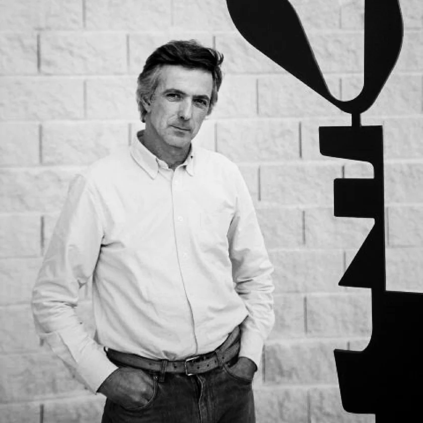
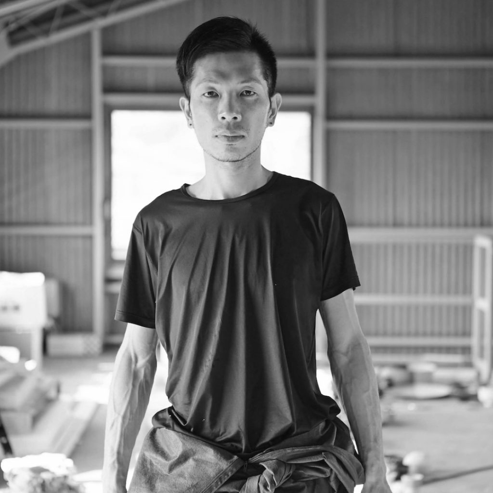
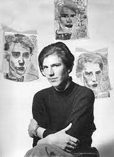

Rui Matos
Rui Matos é um escultor português nascido em Lisboa em 1959. Estudou Escultura na Escola Superior de Belas-Artes de Lisboa e desenvolveu um percurso marcado pela exploração de vários materiais. Começou por trabalhar sobretudo com ardósia e bronze, criando peças de carácter mais compacto e tradicional. Nos anos 1990 passou a utilizar pedra, fase em que aprofundou temas ligados à memória, transformação e fragmento. A partir de 2008 iniciou uma mudança importante ao adotar o ferro como material principal. Com isso, o seu trabalho ganhou leveza e tornou-se mais próximo de um “desenho no espaço”, onde linhas, vazios e sombras passam a ter um papel central. Vive e trabalha perto de Sintra e tem apresentado obras em diversas exposições individuais e coletivas, além de estar representado em coleções públicas e privadas. A sua escultura é conhecida por criar estruturas abertas que convidam o olhar a percorrer o espaço e a imaginar narrativas a partir das formas que propõe.


Edmund de Waal
Edmund de Waal nasceu em 1964 em Nottingham, no Reino Unido, e vive e trabalha em Londres. Estudou Literatura Inglesa em Cambridge e aprofundou a cerâmica, incluindo formação no Japão, o que influenciou a sua abordagem artística.
O seu trabalho centra-se na porcelana: cria conjuntos de vasilhas e recipientes que organiza em instalações minimalistas, transformando objectos simples em composições poéticas. As suas peças dialogam com o espaço, a luz e a arquitectura, criando narrativas visuais e sensações de memória e presença. Além da cerâmica, de Waal é também escritor;
o seu livro The Hare with Amber Eyes conta a história da sua família e de uma coleção de pequenas esculturas japonesas, combinando arte e memória. As suas instalações já foram exibidas em museus e galerias internacionais, consolidando-o como uma referência na cerâmica contemporânea e na arte actual.
Takuro Kuwata
Takuro Kuwata é um artista japonês nascido em 1981, na província de Hiroshima. Formou-se em Cerâmica no Kyoto Saga University of Arts e trabalhou com técnicas tradicionais japonesas, que depois reinterpretou de forma contemporânea. O seu trabalho combina fissuras, vidrados derretidos e cores vibrantes, transformando objetos utilitários como tigelas e copos em peças quase escultóricas. Cada deformação ou gota é parte da expressão da argila, mantendo ligações à estética do imperfeito própria da tradição japonesa, mas com uma abordagem ousada e experimental. Kuwata já expôs internacionalmente, incluindo Nova Iorque, Tóquio e Londres, e as suas obras integram coleções de museus importantes como o Metropolitan Museum of Art e o Art Institute of Chicago. Entre os seus trabalhos mais conhecidos estão as séries de tigelas “Tea Bowl”, as peças “Gold Kairagi Shino Drips” e esculturas como “Melt Down”.


Beate Kuhn
Beate Kuhn (1927 e 2015) foi uma ceramista e escultora alemã conhecida por transformar a cerâmica utilitária em esculturas abstratas. Inicialmente trabalhou com peças funcionais, como vasos e objetos de porcelana, mas a partir do final dos anos 1950 passou a explorar formas puramente artísticas, combinando cilindros, cones, discos e esferas moldados no torno. As suas composições complexas evocam a natureza, lembrando corais, plantas marinhas e outras formas orgânicas.
Kuhn manteve sua oficina em Düdelsheim, na Alemanha, e ao longo da carreira recebeu vários prémios e reconhecimento em associações de cerâmica. As suas obras estão presentes em coleções de museus internacionais, incluindo o Victoria and Albert Museum em Londres, o National Museum of Modern Art em Tóquio e o Carnegie Museum of Art em Pittsburgh, consolidando-a como uma referência na cerâmica do pós-guerra